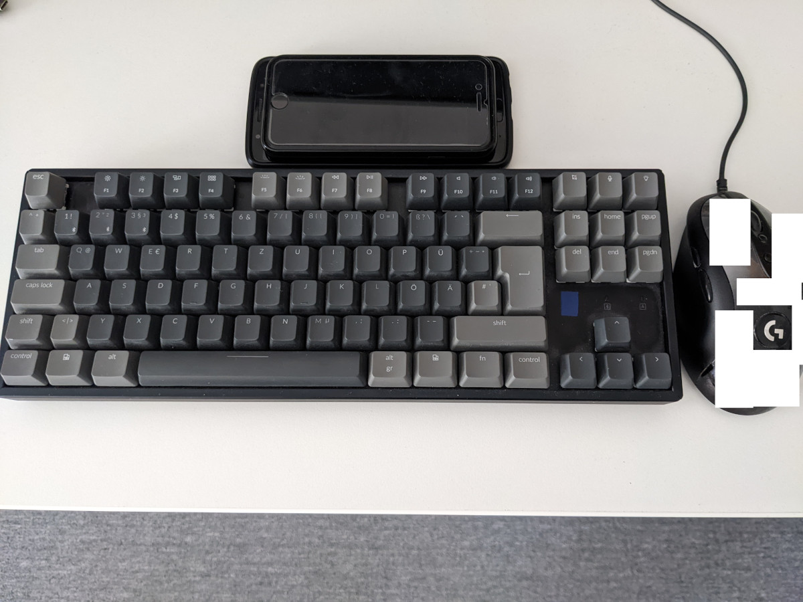

Mastering the Keyboard, the Mouse and Any Input Method or Tool, Really
oz, 2022-03-16
comedy, tools
Hey,
As you may have read, I recently wrote about mastery.
As a lifelong keyboard warrior, I have always appreciated the efficiency, precision and direct access of one of my best tools: The Keyboard.
So, today I'm writing about that. Yeah, yeah, of course, I use a mouse, too. But that's a different topic for someone else, really.
Images go long way, they say. I'm not a good photographer by any means, but I sincerely hope, you get the idea:

ESC The escape or exit key
123 Important number keys: I, US, ALL
^° Instructions for number keys, lots of space still
4 Bad luck number, right after important ONES
5% Sounds like someone else's rule
6& SIX AND (SIX AND (SIX)), oops, slipped a bit there
7/{ SEVEN, cut, EMBRACE
8([ Infinity, protect and TRUE STRIKE
9)] Opposite of SIX, detach, IMMOVABLE WALL
0=} DAMPFLÖCK smiley face with diving googles
ß?\ some German thing? More work I guess
´` A roof
'Bksp' Corrects errors when you TYPE TOO FAST
ENTER NEWLINE, sends the message of GOD
üöä or other regionals, for fast regional proof
TAB Close to instructions, for aiming
GODKEY Speak in the TRUE VOICE OF GOD; but RTFM first
Shift Temp. god speak, may be mistaken at times
<|> Looks like some space ship, for computers
CTRL YOU JUST NEED TO TAKE IT, but easy friends
ALT Another modifier, when CTRL doesn't work
SUPER or windows or apple key, more WÖRK
SPACE Easy to hit, important and big KEY
,; joining words, thoughts
.: joining sentences, highlighting NEXT
-_ partially forgotten SAD FACE, for quitters!
HASH number sign, high command
+~* stay positive, vibe, SEE THE LIGHT
ins, del, home, pg up etc., just some words
F1-F12 Function keys, for potions, assign at WILL